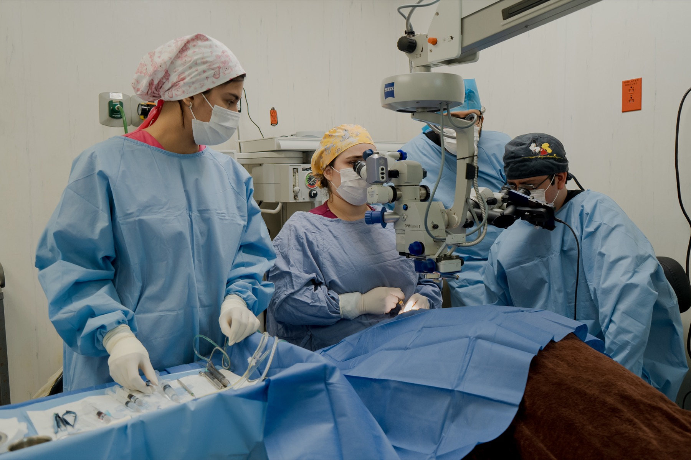
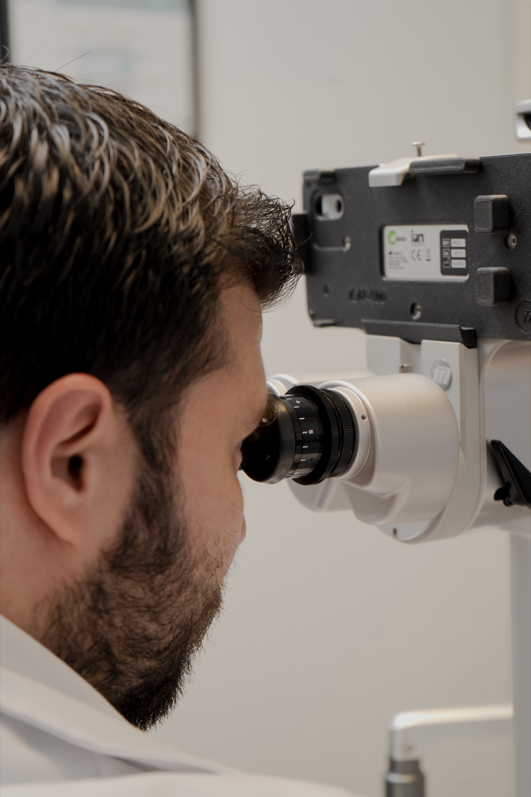
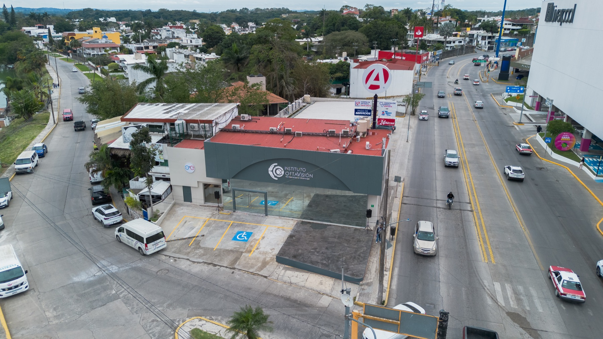
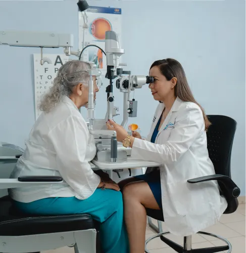

¿Ves borroso?Revisa tu catarata.
Agenda tu consulta en Oftavisión. Hacemos más de 25,000 cirugías al año en nuestra red, con oftalmólogos certificados y lentes intraoculares ZEISS, Alcon, J&J y Bausch + Lomb.
en nuestra redClínicas en 7 ciudades.
Agenda por WhatsApp.
Lo que más preguntan sobre la catarata
Preguntas frecuentes
La cirugía de catarata es una cirugía ambulatoria: se retira el cristalino opaco y se coloca un lente intraocular. Aquí te explicamos lo básico.
Ver más preguntas
Cuidamos tu vista todos los días
¿Por qué elegir Oftavisión?
Somos una red privada de oftalmología de alta especialidad. Atendemos a adultos mayores y a sus familias con médicos certificados, tecnología de quirófano y un trato cercano en cada paso.
Historias de pacientes
Médicos certificados
Nuestros oftalmólogos están certificados por el Consejo Mexicano de Oftalmología.
Experiencia
Más de 25,000 cirugías al año en nuestra red de más de 15 centros quirúrgicos.
Tecnología
Microscopios quirúrgicos ZEISS y lentes intraoculares de ZEISS, Alcon, Johnson & Johnson y Bausch + Lomb.
Te acompañamos
Una consejera quirúrgica te explica tus opciones y agendamos tus revisiones después de la cirugía.

¿Son síntomas de catarata?
Responde 5 preguntas sencillas sobre lo que ves.
Personas reales, historias reales.
De la primera consulta a las revisiones después de la cirugía: pacientes de nuestras clínicas cuentan cómo fue su experiencia.
Así se ve con catarata
¿Cómo se ve la vida con catarata?
Mueve el control y mira cómo la catarata vuelve la vista borrosa, opaca y con brillos. Si se parece a lo que ves, es momento de una consulta.

Con catarataSin catarata
Guía gratuita
Recibe la guía de cirugía de catarata
Qué es la catarata, cómo es la consulta, qué lente intraocular elegir y qué esperar el día de tu cirugía. Te la enviamos por WhatsApp.
Recibir la guíaConsulta clara, cirugía corta, seguimiento cercano.
Tu consulta
Registro, examen de optometría y consulta con tu oftalmólogo, sin presión y sin vueltas. Te explicamos lo que ves con palabras claras, como lo haría un médico de confianza y, si hace falta, agendamos tus estudios: conteo endotelial, ecografía y cálculo de lente intraocular.
Tu cirugía
El día de tu cirugía resolvemos tus últimas dudas y te preparamos con calma. La cirugía de catarata es ambulatoria y dura de 15 a 25 minutos por ojo. En la clínica estás de 2 a 4 horas en total y regresas a casa el mismo día.
Tu seguimiento
Nuestra atención no termina en el quirófano. Agendamos tus revisiones después de la cirugía para cuidar tu recuperación y resolver tus dudas. Si necesitas lentes, te atendemos en la óptica de tu sede.
Encuentra tu clínica
Clínicas Oftavisión en 7 ciudades. Elige tu sede y agenda por WhatsApp.
Lentes intraoculares de marca
En tu cirugía de catarata se coloca un lente intraocular. Trabajamos con ZEISS, Alcon, Johnson & Johnson y Bausch + Lomb, y tu médico te ayuda a elegir entre lente estándar o premium.
Conoce los lentes